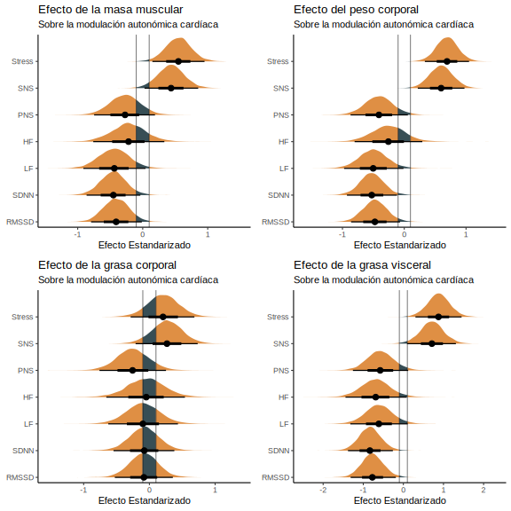
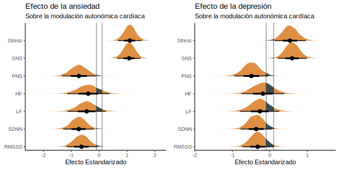
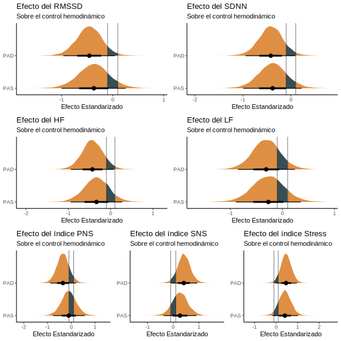

Característica |
Global |
Sexo |
|||
|---|---|---|---|---|---|
N = 18 1 |
Hombre |
Mujer |
Difference 2 |
95% CI 2,3 |
|
| Edad | 39.1 ± 9.0 | 38.9 ± 7.9 | 39.3 ± 10.3 | -0.05 | -0.98, 0.88 |
| Presión sistólica | 125.4 ± 16.7 | 137.3 ± 16.1 | 116.0 ± 10.1 | 1.7 | 0.60, 2.8 |
| Presión diastólica | 77.8 ± 10.1 | 80.4 ± 8.9 | 75.8 ± 11.0 | 0.48 | -0.46, 1.4 |
| Puntaje BAI | 4.6 ± 6.0 | 4.5 ± 5.8 | 4.7 ± 6.5 | -0.03 | -0.96, 0.90 |
| Puntaje BDI | 5.9 ± 5.6 | 4.6 ± 5.6 | 6.9 ± 5.7 | -0.42 | -1.4, 0.52 |
| Categoría BAI | |||||
| Muy baja | 14 (93%) | 6 (100%) | 8 (89%) | ||
| Moderada | 1 (6.7%) | 0 (0%) | 1 (11%) | ||
| Severa | 0 (0%) | 0 (0%) | 0 (0%) | ||
| Categía BDI | |||||
| Minima Depresión | 16 (89%) | 7 (88%) | 9 (90%) | ||
| Depresión Leve | 2 (11%) | 1 (13%) | 1 (10%) | ||
| Depresión Moderada | 0 (0%) | 0 (0%) | 0 (0%) | ||
| Depresión Grave | 0 (0%) | 0 (0%) | 0 (0%) | ||
| Peso corporal | 75.8 ± 17.1 | 87.5 ± 16.3 | 66.4 ± 11.3 | 1.6 | 0.53, 2.7 |
| Estatura | 168.9 ± 10.7 | 177.1 ± 7.6 | 162.3 ± 8.0 | 2.0 | 0.88, 3.2 |
| Grasa corporal | 22.4 ± 8.9 | 17.6 ± 9.2 | 26.3 ± 6.8 | -1.1 | -2.1, -0.14 |
| Masa muscular | 56.0 ± 13.4 | 68.2 ± 8.1 | 46.2 ± 7.0 | 3.1 | 1.7, 4.5 |
| Masa ósea | 3.0 ± 0.7 | 3.6 ± 0.4 | 2.5 ± 0.4 | 3.0 | 1.7, 4.4 |
| Agua corporal | 57.6 ± 6.1 | 61.2 ± 5.9 | 54.7 ± 4.6 | 1.3 | 0.28, 2.3 |
| Grasa visceral | 6.4 ± 5.5 | 6.8 ± 5.1 | 6.1 ± 6.0 | 0.13 | -0.80, 1.1 |
| Duración intervalo R-R | 910.9 ± 123.8 | 908.0 ± 145.2 | 914.1 ± 105.6 | -0.05 | -1.1, 0.96 |
| FC media | 67.1 ± 10.1 | 67.8 ± 12.3 | 66.3 ± 7.7 | 0.15 | -0.86, 1.2 |
| RMSSD | 38.7 ± 17.6 | 31.8 ± 13.2 | 46.5 ± 19.6 | -0.95 | -2.0, 0.12 |
| SDNN | 47.0 ± 19.7 | 39.8 ± 17.8 | 55.2 ± 19.7 | -0.88 | -1.9, 0.18 |
| Índice SNS | 0.4 ± 1.6 | 0.8 ± 2.0 | -0.1 ± 0.8 | 0.62 | -0.42, 1.7 |
| Índice PNS | -0.2 ± 0.9 | -0.4 ± 0.9 | 0.1 ± 1.0 | -0.51 | -1.5, 0.52 |
| Índice Stress | 11.0 ± 6.6 | 13.3 ± 8.3 | 8.4 ± 2.4 | 0.85 | -0.21, 1.9 |
| HF | 643.5 ± 577.0 | 506.5 ± 367.3 | 800.1 ± 752.2 | -0.53 | -1.6, 0.50 |
| LF | 1,695.3 ± 1,435.2 | 1,235.6 ± 1,208.7 | 2,220.6 ± 1,580.6 | -0.75 | -1.8, 0.30 |
| VLF | 138.9 ± 145.1 | 80.0 ± 57.4 | 206.3 ± 188.0 | -0.98 | -2.1, 0.09 |
| 1
Media ± DE; n (%) |
|||||
| 2
Standardized Mean Difference |
|||||
| 3
CI = Intervalo de confianza |
|||||
1 Análisis Estadístico
1.1 Descriptivos
Para los estadísticos descriptivos se reportaron la media y la desviación estándar (media ± sd) para las variables continuas, y la frecuencia absoluta (n) y relativa (%) para las variables categóricas.
1.2 Marco de análisis
Utilizamos un marco bayesiano para explorar las complejas interacciones entre factores clave asociados con el dolor no oncológico. Los modelos bayesianos son preferibles a los métodos frecuentistas tradicionales porque pueden cuantificar la incertidumbre y estimar los parámetros del modelo de forma más exhaustiva. Además, la inferencia bayesiana permite la inclusión de conocimientos previos sobre los parámetros del modelo, lo que posibilita la integración de hallazgos existentes e investigaciones anteriores. El marco bayesiano proporciona distribuciones posteriores que permiten una interpretación probabilística de las estimaciones de los parámetros con intervalos creíbles que reflejan la incertidumbre de los mismos.
Para evaluar el efecto de la composición corporal, así como de la sintomatología ansiosa y depresiva, sobre la modulación autonómica cardíaca, realizamos un modelo lineal generalizado multivariable bayesiano, lo que nos permitió evaluar la relación existente con los ejes de variabilidad de la frecuencia cardíaca (VFC). El mismo abordaje fue utilizado para evaluar el efecto de los diferentes índices de VFC sobre parámetros de control hemodinámico. Este modelo bayesiano multivariable fue parametrizado según la Ecuación 1.
\[ \begin{aligned} \mathbf{Y} \mid \mathbf{X} &\sim \mathcal{N}\left(\mu_{j}, \sigma_j\right) \\ \mu_{j} &= \beta_{j0} + \sum_{i=1}^{p} \beta_{ji} x_i \\ \end{aligned} \tag{1}\]
En este modelo, asumimos que la matriz de variables dependientes (\(\mathbf{Y}\)) se distribuye normalmente respecto de (\(\mu\)), con desviación estandar sigma (\(\sigma\)), para cada variable respuesta (\(j\)). Por otro lado, definimos \(\mu_{ji}\) como la combinación lineal de un intercepto (\(\beta_{j0}\)) y la suma de los productos de los coeficientes lineales (\(\beta_{ji}\)) con la variables independientes (\(x_i\)) por cada parámetro (\(p\)).
Tanto las variables independientes como las dependientes, se estandarizaron para facilitar la comparación de la magnitud de los efectos entre los diferentes índices de interés, así como para mejorar la convergencia y exploración del espacio de parámetros de la distribución posterior.
1.3 Priors e Hiperparámetros
Para los coeficientes lineales (\(\beta\)), se eligieron priors con un efecto regularizador sobre los efectos principales, basados en una distribución normal centrados en cero y con una desviación estandar de 3, (i.e., \(\beta \sim \mathcal{N}(0,3)\)), limitando el efecto de observaciones influyentes y mejorando la convergencia de los modelos.
Para la estimación de los modelos, se usó el algoritmo No-U-Turn, variante del algoritmo Monte Carlo Hamiltoniano, por medio del paquete brms (v2.21.0) y rstan (v2.32.6). Los parámetros del algoritmo fueron 5 cadenas de Markov, 2000 iteraciones iniciales de preparación y 2000 iteraciones efectivas por cadena (10 mil en total).
1.4 Reporte de Indices
Siguiendo el marco Sequential Effect eXistence and sIgnificance Testing (SEXIT) para describir los efectos a partir de modelos bayesianos (Makowski et al. 2019), se comunicaron la mediana y el IC95% (utilizando el intervalo de mayor densidad) como medida de centralidad e incertidumbre, la probabilidad de dirección (pd) como medida de existencia, la proporción de la distribución de probabilidad posterior del signo de la mediana que cae fuera de la región de equivalencia práctica (ROPE) como medida de significación práctica (ps), estimada como una décima parte (1/10 = 0. 1) de la DE de la variable de respuesta, y el factor de Bayes (BF10) utilizando la relación de densidad de Savage-Dickey contra el punto nulo que indica si el valor nulo se ha vuelto menos o más probable dados los datos observados (Heck 2019), utilizando esto como una medida de la magnitud absoluta de la evidencia a favor o en contra de la hipótesis nula (de no efecto).
Para la interpretación de BF hemos considerado: BF = 1, ninguna evidencia; 1 < BF <= 3, anecdótico; 3 < BF <= 10, moderado; 10 < BF <= 30, fuerte; 30 < BF <= 100, muy fuerte; y BF > 100, como evidencia extrema (Jeffreys 1998). Para la proporción de la posterior en el ROPE consideramos: < 1%, significativo; < 2,5%, probablemente significativo; ≤ 97,5% & ≥ 2,5%, significación indecisa; > 97,5%, probablemente insignificante; > 99%, insignificante (Makowski et al. 2019).
1.5 Convergencia
La convergencia y estabilidad del muestreo bayesiano se ha evaluado mediante R-hat, que debe ser inferior a 1,01 (Vehtari et al. 2019), el tamaño efectivo de la muestra (ESS), que debe ser superior a 1000 (Bürkner 2017), y la inspección visual de los traceplots y las comprobaciones predictivas posteriores. Todos los análisis estadísticos se calcularon e implementaron en el lenguaje de programación R (R Core Team 2021).
2 Resultados
2.1 Caracterización de la muestra
La muestra evalauda consistió de 18 individuos (8 hombres, 10 mujeres). Las características de la muestra evaluada pueden observarse en la tabla 1.
Tabla 1. Características sociodemográficas, parámetros psicológicos, composición corporal y cardiovasculares de los participantes del estudio. Además de las características globales de la muestra, se presentan las diferencias medias estandarizadas entre grupos de sexo.
2.2 Efecto de la composición corporal sobre el control autonómico

Figura 1. Efectos lineales estandarizados de los parámetros de composición corporal sobre la modulación autonómica cardíaca, obtenido de los modelos lineales generalizados bayesianos multivariados. El área oscurecida representa la región de equivalencia práctica (ROPE).
Al evaluar el efecto de la composición corporal, observamos que el peso corporal generó un efecto negativo sobre parámetros autonómicos cardíacos, específicamente RMSSD (\(\beta\) = -0.48, CI95%[-0.86, -0.07], pd = 0.99, ps = 0.97, ROPE = 0.01, BF10 = 1.088), SDNN (\(\beta\) = -0.53, CI95%[-0.93, -0.12], pd = 0.99, ps = 0.98, ROPE = 0, BF10 = 1.703), LF (\(\beta\) = -0.5, CI95%[-0.97, -0.01], pd = 0.98, ps = 0.95, ROPE = 0.02, BF10 = 0.784). Pese a lo anterior, observamos que el peso corporal se asoció positivamente a un mayor índice de actividad simpática (\(\beta\) = 0.6, CI95%[0.22, 0.97], pd = 1, ps = 0.99, ROPE = 0, BF10 = 7.062), y con mayor evidencia a favor del índice de estrés autonómico (\(\beta\) = 0.69, CI95%[0.33, 1.05], pd = 1, ps = 1, ROPE = 0, BF10 = 29.344).
Un efecto similar se observó al considerar la influencia de la masa muscular a nivel de RMSSD (\(\beta\) = -0.41, CI95%[-0.79, -0.01], pd = 0.98, ps = 0.94, ROPE = 0.04, BF10 = 0.593), SDNN (\(\beta\) = -0.45, CI95%[-0.86, -0.04], pd = 0.98, ps = 0.96, ROPE = 0.02, BF10 = 0.793), índice SNS (\(\beta\) = 0.44, CI95%[0.03, 0.85], pd = 0.98, ps = 0.95, ROPE = 0.03, BF10 = 0.626) y finalmente índice de estrés autonómico (\(\beta\) = 0.55, CI95%[0.15, 0.95], pd = 1, ps = 0.99, ROPE = 0, BF10 = 2.435).
La grasa visceral generó de igual manera un efecto negativo sobre los marcadores de VFC, entre ellos RMSSD (\(\beta\) = -0.77, CI95%[-1.31, -0.19], pd = 1, ps = 0.99, ROPE = 0, BF10 = 2.779), SDNN (\(\beta\) = -0.83, CI95%[-1.38, -0.26], pd = 1, ps = 0.99, ROPE = 0, BF10 = 5.262), e índices autonómicos simpáticos (\(\beta\) = 0.71, CI95%[0.09, 1.31], pd = 0.99, ps = 0.97, ROPE = 0, BF10 = 1.51) y de estrés autonómico (\(\beta\) = 0.88, CI95%[0.3, 1.45], pd = 1, ps = 1, ROPE = 0, BF10 = 5.983). Sin embargo, a pesar de la relación existente con grasa visceral, este efecto no se observó en relación a la grasa corporal total.
2.3 Efecto de la ansiedad y depresión sobre el control autonómico

Figura 2. Efectos lineales estandarizados de los parámetros de ansiedad y depresión sobre la modulación autonómica cardíaca, obtenido de los modelos lineales generalizados bayesianos multivariados. El área oscurecida representa la región de equivalencia práctica (ROPE).
La ansiedad, representada como el puntaje total del instrumento, se asoció inversamente con la actividad de marcardores autonómicos cardíacos como RMSSD (\(\beta\) = -0.64, CI95%[-1.17, -0.08], pd = 0.99, ps = 0.97, ROPE = 0, BF10 = 1.336), SDNN (\(\beta\) = -0.73, CI95%[-1.29, -0.19], pd = 1, ps = 0.99, ROPE = 0, BF10 = 2.976), índices autonómicos como PNS (\(\beta\) = -0.73, CI95%[-1.34, -0.12], pd = 0.99, ps = 0.98, ROPE = 0, BF10 = 1.932) y de manera directa con mucha más evidencia a favor de índices de actividad simpática (\(\beta\) = 1.07, CI95%[0.64, 1.48], pd = 1, ps = 1, ROPE = 0, BF10 = 1135.605) y de estrés autonómico (\(\beta\) = 1.1, CI95%[0.68, 1.52], pd = 1, ps = 1, ROPE = 0, BF10 = 317.26).
En el caso de la depresión, valorada de igual manera como el puntaje total del cuestionario de Beck, se asoció claramente, y de manera inversa, a un menor índice de actividad parasimpática (\(\beta\) = -0.49, CI95%[-0.95, -0.05], pd = 0.98, ps = 0.95, ROPE = 0.02, BF10 = 0.892), y de manera directa a un mayor índice SNS (\(\beta\) = 0.59, CI95%[0.22, 0.98], pd = 1, ps = 0.99, ROPE = 0, BF10 = 5.37) y de estrés autonómico (\(\beta\) = 0.54, CI95%[0.13, 0.96], pd = 0.99, ps = 0.98, ROPE = 0, BF10 = 1.82).
2.4 Influencia del control autonómico sobre el control hemodinámico

Figura 3. Efectos lineales estandarizados de los parámetros de VFC sobre el control hemodinámico, obtenido de los modelos lineales generalizados bayesianos multivariados. El área oscurecida representa la región de equivalencia práctica (ROPE).
Finalmente y en relación a los índices de actividad autonómica cardíaca y el control hemodinámico, observamos que en relación a la presión sistólica existe un efecto globalmente negativo de los índices de tiempo como RMSSD (\(\beta\) = -0.37, CI95%[-1, 0.25], pd = 0.89, ps = 0.82, ROPE = 0.12, BF10 = 0.247) y SDNN (\(\beta\) = -0.38, CI95%[-0.99, 0.22], pd = 0.9, ps = 0.83, ROPE = 0.12, BF10 = 0.237), así como de los ejes de frecuencia como HF (\(\beta\) = -0.33, CI95%[-0.95, 0.27], pd = 0.88, ps = 0.78, ROPE = 0.15, BF10 = 0.187) y LF (\(\beta\) = -0.27, CI95%[-0.9, 0.35], pd = 0.81, ps = 0.71, ROPE = 0.18, BF10 = 0.149). Por otro lado se observa una tendencia a que un mayor tono simpático se estaría asociando a una mayor presión sistólica, al menos por parte del índice de SNS (\(\beta\) = 0.26, CI95%[-0.38, 0.9], pd = 0.81, ps = 0.71, ROPE = 0.19, BF10 = 0.151) y el índice de estrés autonómico (\(\beta\) = 0.41, CI95%[-0.18, 1.01], pd = 0.92, ps = 0.86, ROPE = 0.1, BF10 = 0.285). Sin embargo, nuestros datos proporcionan mayor apoyo a favor de la hipótesis nula, comparado con la probabilidad a posterior del valor nulo después de incorporar los datos.
En el caso de la presión diastólica, pareciera ser que los diferentes de VFC ejercen una influencia similar a lo observado en el control sistólico, en donde tanto el RMSSD (\(\beta\) = -0.46, CI95%[-0.97, 0.04], pd = 0.96, ps = 0.93, ROPE = 0.05, BF10 = 0.482), como SDNN (\(\beta\) = -0.42, CI95%[-0.95, 0.09], pd = 0.95, ps = 0.9, ROPE = 0.08, BF10 = 0.378) observamos un efecto de mayor magnitud a lo visto en la presión sistólica. A nivel de ejes de frecuencia, observamos que HF ejerce un efecto negativo (\(\beta\) = -0.43, CI95%[-0.94, 0.08], pd = 0.95, ps = 0.9, ROPE = 0.07, BF10 = 0.367) con mayor probabilidad de lo que ejerce LF (\(\beta\) = -0.31, CI95%[-0.85, 0.24], pd = 0.88, ps = 0.79, ROPE = 0.15, BF10 = 0.178). Si bien, a nivel de índices autonómicos cardíacos, observamos que un mayor tono parasimpático estaría asociado a una menor presión diastólica (\(\beta\) = -0.35, CI95%[-0.89, 0.2], pd = 0.91, ps = 0.83, ROPE = 0.12, BF10 = 0.228), la evidencia aportada brinda mayor soporte a favor de la ausencia de un efecto sobre la presión diastólica. Por otro lado, tanto los índices SNS (\(\beta\) = 0.41, CI95%[-0.09, 0.93], pd = 0.95, ps = 0.9, ROPE = 0.08, BF10 = 0.366) como de estrés autonómico (\(\beta\) = 0.46, CI95%[-0.03, 0.96], pd = 0.97, ps = 0.93, ROPE = 0.05, BF10 = 0.545), ejercen un efecto que incrementa proporcionalmente la presión arteriol diastólica, que aunque aporta evidencia insuficiente a favor de la presencia de un efecto, este es mayor que a lo observado a nivel de control sistólico.
Referencias
Bürkner, Paul-Christian. 2017. «brms: An R Package for Bayesian Multilevel Models Using Stan». Journal of Statistical Software 80 (1): 1-28. https://doi.org/10.18637/jss.v080.i01.
Heck, Daniel W. 2019. «A caveat on the Savage–Dickey density ratio: The case of computing Bayes factors for regression parameters». British Journal of Mathematical and Statistical Psychology 72 (2): 316-33.
Jeffreys, Harold. 1998. The theory of probability. OUP Oxford.
Makowski, Dominique, Mattan S Ben-Shachar, SH Annabel Chen, y Daniel Lüdecke. 2019. «Indices of effect existence and significance in the Bayesian framework». Frontiers in psychology 10: 2767.
R Core Team. 2021. R: A Language and Environment for Statistical Computing. Vienna, Austria: R Foundation for Statistical Computing. https://www.R-project.org/.
Vehtari, Aki, Andrew Gelman, Daniel Simpson, Bob Carpenter, y Paul-Christian Bürkner. 2019. «Rank-normalization, folding, and localization: An improved R for assessing convergence of MCMC. arXiv». arXiv preprint arXiv:1903.08008.